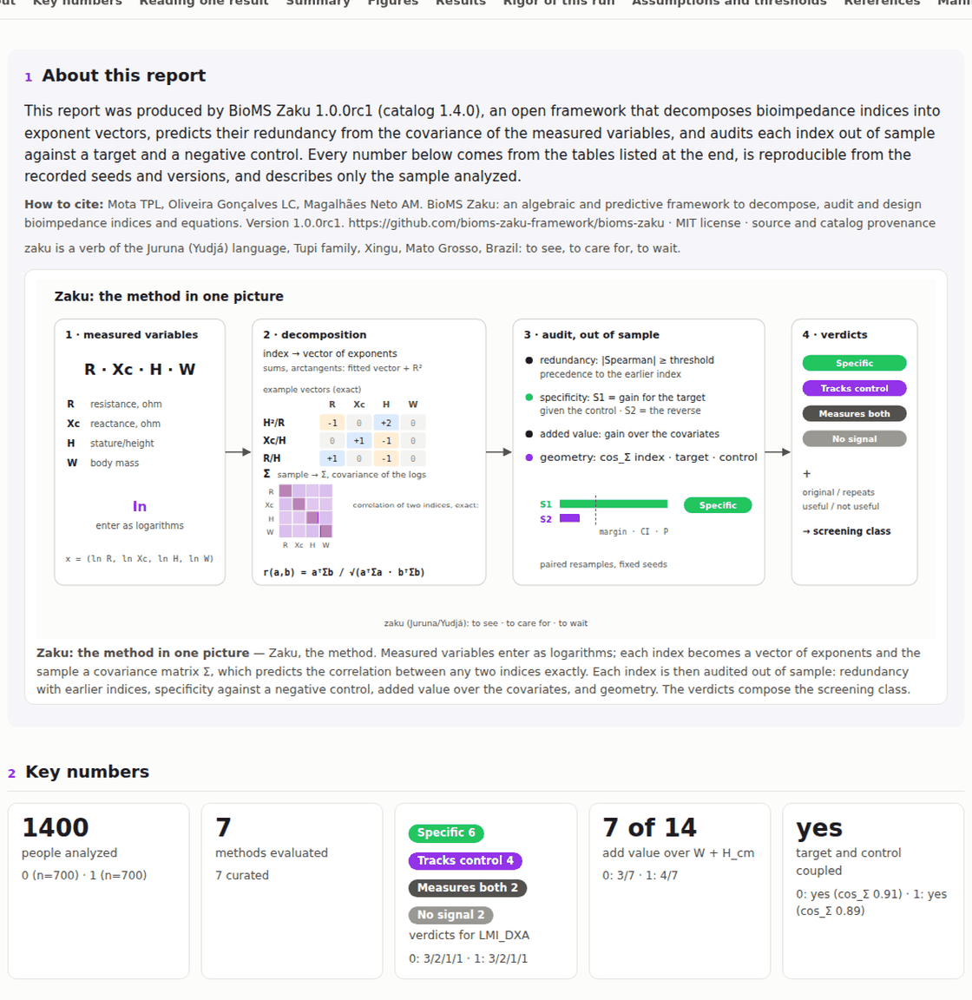
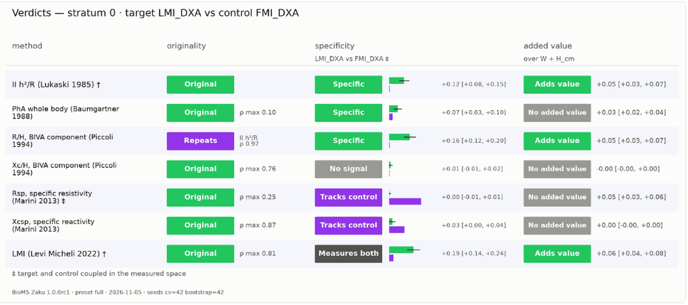

BioMS Zaku: algebraic decomposition and out-of-sample audit of indices and predictive equations
Thalles Paul Leandro Mota
Abstract. Bioimpedance indices are usually validated by their correlation with a reference measurement, but almost all of them grow with body size and correlate with every tissue. BioMS Zaku is open-source software that audits these indices before they are accepted. It writes each index as a vector of exponents of the measured variables, predicts the correlation between two indices before computing either of them, from the covariance matrix of the logarithms, and tests out of sample whether the index predicts the target beyond what a declared negative control already predicts. On a full run of the package's example, the predicted correlation differed from the observed one by at most 0.015, a pair of published indices was identified as redundant (ρ = 0.97), and the audit separated indices specific to lean mass from indices that follow fat mass.
My role: lead creator and developer. Tools: Python · NumPy · pandas · SciPy · scikit-learn · matplotlib. Code: open (MIT license) on GitHub.
1. Why I built it
I have always been drawn to bioimpedance, and the field has a standardization problem: methods, equipment and indices multiply, and they are compared in ways that are hard to repeat. I built BioMS Zaku to give the field a common, documented way to record indices and equations and to analyze them with rigor, so that modeling with bioimpedance data starts from a solid base. It is a public library, still in development. The name comes from Juruna (Yudjá), a language of the Xingu in Mato Grosso, where zaku means to see, to care for, to wait.
The problem it attacks is simple to state. An index that correlates with lean mass proves little, because larger people have more of every tissue. Before accepting an index, three questions should be answered: is it new, or does it already exist under another name? Does it measure what it claims, or just body size? Does it add anything to stature and body mass?

2. How it works
Every index that is a product of powers of resistance, reactance, stature and mass is written as its vector of exponents. With the covariance matrix of the logarithms of those variables, the correlation between two indices can be predicted before either is computed, which shows at once whether a "new" index is an old one in disguise. Then comes the audit: the researcher declares a target, such as lean mass, and a negative control, such as fat mass, and on identical out-of-sample resamples the software measures whether the index helps predict the target beyond the control (S1) and the control beyond the target (S2). Specific indices show the first gain and not the second.
The software is built to be checked. It runs from a guided terminal or a notebook without any programming, writes a single HTML report in Portuguese, English, Spanish or Italian, fixes its assumptions in five written contracts, records seeds, versions and the SHA-256 of every table, and never outputs individual-level data, so it can run inside a partner's environment.
3. What the example shows
On the package's example, a synthetic dataset of 1,400 people generated from NHANES parameters, the predicted correlations missed the observed ones by at most 0.015 across 42 pairs. The BIVA component R/H turned out to be redundant with the much older impedance index H²/R (ρ = 0.97). Against fat mass as a negative control, three of the seven curated indices were specific to lean mass, while specific resistivity added almost nothing to the target (S1 of 0.004) and a lot to the control (S2 of 0.245): it follows fat mass.

The software is also honest about its own limits. It flagged this contrast as weak by construction, because target and control come from the same scan, and its sensitivity analysis showed that 5 of the 14 verdicts change somewhere on the grid of thresholds. The report says so next to each verdict.

4. What this means in practice
Before adopting or publishing an index, check whether it repeats one already published, whether it measures the target beyond a negative control, and whether it adds anything to stature and body mass. In partnerships with sensitive data, the analysis can run in the partner's environment, since no output contains individual data. And anyone reviewing a paper or an equation can rerun the numbers from the recorded configuration and seeds.
5. Limitations
The demonstration uses synthetic data generated from NHANES 1999–2004 parameters; the verdicts describe the example, not a real population. The software is at its first release candidate (1.0.0rc1). The figures and screens on this page come from the public version of the code (commit 41fc62e).
Lead creator and developer: T. P. L. Mota, with contributions from L. C. Oliveira Gonçalves and A. M. de Magalhães Neto.